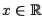
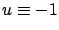
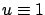

For the scalar system
with

and
which results in
which gives
It turns out that this state of affairs is not an exception; in fact, it is quite typical for problems with bounded controls and terminal cost to have nondifferentiable value functions. On the other hand, the local Lipschitz property--which the function (5.30) does possess--is a known attribute of value functions for some reasonably general classes of optimal control problems (we will say more on this below).
The above example clarifies why we cannot derive the maximum principle from the HJB equation. There really is no ``easy" proof of the maximum principle (except in settings much less general than the one we considered). More importantly, the difficulty that we just exposed
has implications not only for relating the HJB equation and the maximum principle, but for
the HJB theory itself. Namely, we need to reconsider the assumption that
 and instead work with some generalized concept of a solution to the HJB partial differential equation.5.3Because of this difficulty, the theory of dynamic programming did not become rigorous until the early
1980s when, after a series of related developments, the notion of a
viscosity solution was introduced by Crandall and Lions; that work completes the historical timeline of key contributions
listed in Section 5.1.5. (The maximum principle, on the other hand, was on solid technical ground from the beginning.) We turn to viscosity solutions in the next section, postponing a discussion of further links between the HJB equation and the maximum principle until Section 7.2.
and instead work with some generalized concept of a solution to the HJB partial differential equation.5.3Because of this difficulty, the theory of dynamic programming did not become rigorous until the early
1980s when, after a series of related developments, the notion of a
viscosity solution was introduced by Crandall and Lions; that work completes the historical timeline of key contributions
listed in Section 5.1.5. (The maximum principle, on the other hand, was on solid technical ground from the beginning.) We turn to viscosity solutions in the next section, postponing a discussion of further links between the HJB equation and the maximum principle until Section 7.2.